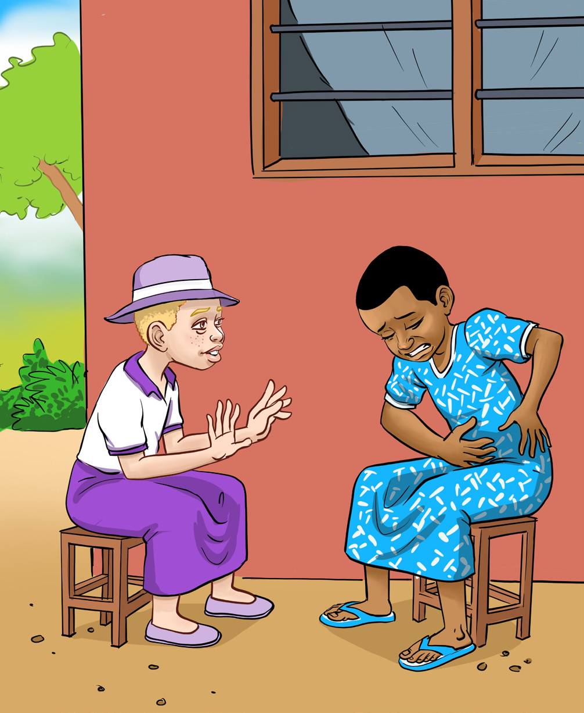

English for Secondary Schools Student’s Book Form One, printed page 12
Questions
1.What happened at Tupendane Secondary School?
2.Who helped to put out the fire?
3.Which buildings of the school were destroyed by the fire?
4.Where was the National Flag situated in the school compound?
5.Where were the offices of the Deputy Headmaster and Academic Mistress located?
6.Which building was not destroyed by fire?
(e) Listen to instructions given by your teacher and complete the drawing tasks given.
Responding to questions from others
(a) Study the following picture.Then, answer the questions that follow.

Two schoolgirls sit outside talking as one girl holds her stomach in pain and looks very weak while the other asks what is wrong.Hi, Mary, what’s wrong?
I don’t feel well Tammy. I have a stomach ache. I feel very weak.